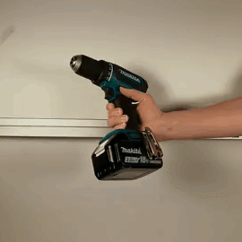
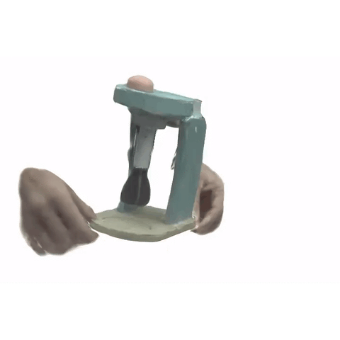
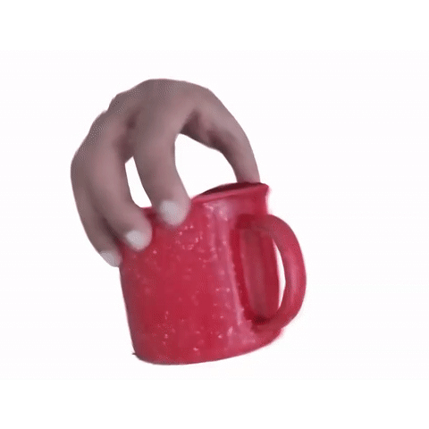
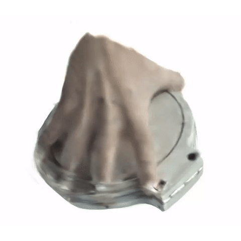
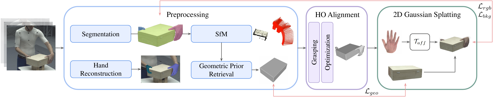
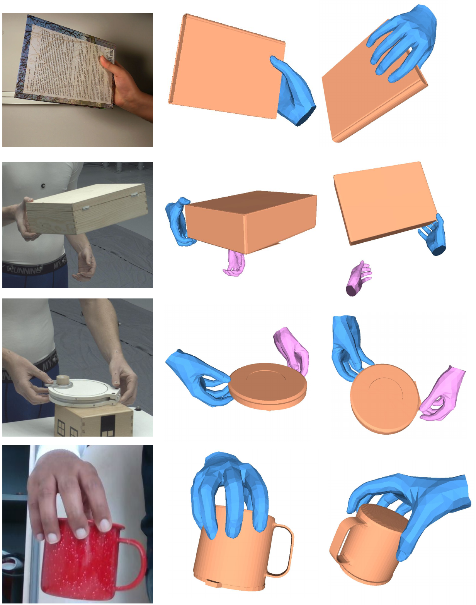
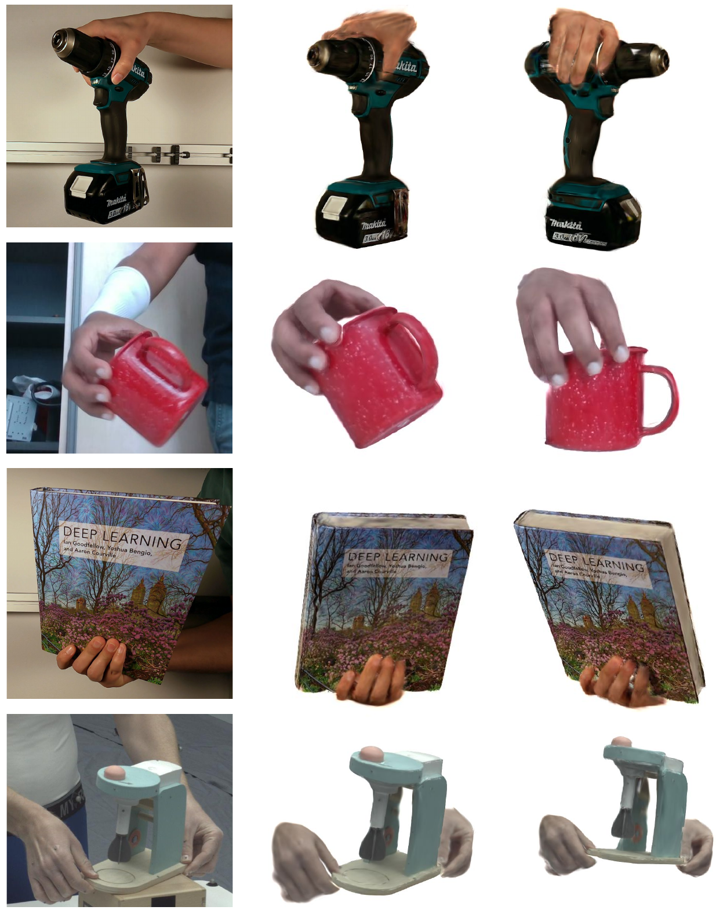

GHOST: Fast Category-agnostic Hand-Object Interaction Reconstruction from RGB Videos using Gaussian Splatting
1RPTU 2DFKI-AV Kaiserslautern 3UPM Saudi Arabia 4NUST-SEECS Pakistan
Abstract
Understanding realistic hand-object interactions from monocular RGB videos is essential for AR/VR, robotics, and embodied AI. Existing methods rely on category-specific templates or heavy computation, yet still produce physically inconsistent hand-object alignment in 3D. We introduce GHOST (Gaussian Hand-Object Splatting), a fast, category-agnostic framework for reconstructing dynamic hand-object interactions using 2D Gaussian Splatting. GHOST represents both hands and objects as dense, view-consistent Gaussian discs and introduces three key innovations: (1) a geometric-prior retrieval and consistency loss that completes occluded object regions, (2) a grasp-aware alignment that refines hand translations and object scale to ensure realistic contact, and (3) a hand-aware background loss that prevents penalizing hand-occluded object regions. GHOST achieves complete, physically consistent, and animatable reconstructions from a single RGB video while running an order of magnitude faster than prior category-agnostic methods. Extensive experiments on ARCTIC, HO3D, and in-the-wild datasets demonstrate state-of-the-art accuracy in 3D reconstruction and 2D rendering quality.
Results






Method

GHOST pipeline: Preprocessing (segmentation, SfM, hand reconstruction, geometric prior retrieval), optimization, and 2D Gaussian Splatting with hand-object losses.
Qualitative Results


Quantitative Results
3D Reconstruction Metrics (ARCTIC Bi-CAIR)
| Method | MPJPERA,h↓ | MPJPERA,l↓ | MPJPERA,r↓ | CDICP↓ | CDr↓ | CDl↓ | CDh↓ | F10mm↑ | F5mm↑ |
|---|---|---|---|---|---|---|---|---|---|
| HOLD | 25.91 | 27.13 | 24.70 | 2.07 | 123.54 | 105.92 | 114.73 | 63.92 | 37.13 |
| BIGS | 24.49 | 24.63 | 24.35 | 1.36 | 31.28 | 46.11 | 38.69 | 81.78 | 56.41 |
| GHOST | 24.07 | 25.42 | 22.71 | 2.26 | 13.40 | 23.41 | 18.40 | 60.88 | 34.67 |
MPJPE in mm, CD in cm2. Green = best, orange = second best.
2D Rendering Quality
| Method | ARCTIC | HO3D | Runtime↓ | ||||
|---|---|---|---|---|---|---|---|
| PSNR↑ | SSIM↑ | LPIPS↓ | PSNR↑ | SSIM↑ | LPIPS↓ | ||
| HOLD | 12.83 | 0.66 | 0.32 | 16.20 | 0.74 | 0.21 | 16h |
| BIGS | 24.87 | 0.96 | 0.05 | 24.51 | 0.92 | 0.07 | 13h |
| GHOST | 25.93 | 0.88 | 0.02 | 21.37 | 0.75 | 0.03 | 1h |
GHOST achieves 13-16x faster runtime while maintaining competitive or superior rendering quality.